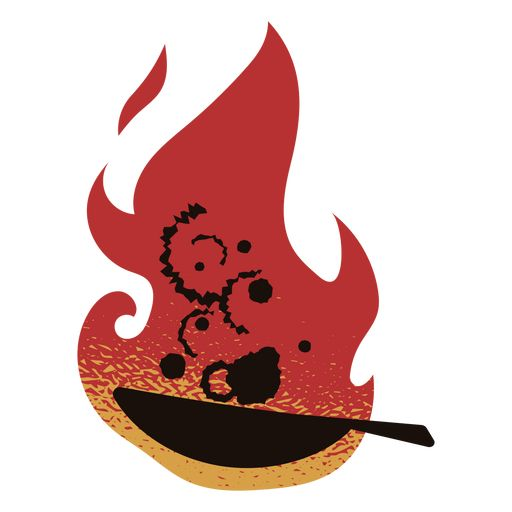

| Common cases of Fire |

Cooking |
1. Most cases of house fires are commonly caused by Cooking, most often occurs by leaving food that is being cooked unattended. |

Electrical Equipment |
2. Fires from electrical equipment are results of many residential and industrial fires. Some of the reasons why electrical fires occurs are because of faulty sockets/outlets, having a overloaded circuit, Inadequate wiring and etc. |

Smoking |
3. Tobacco is a substance that is maily used in cigarettes, it is manufactured to burn over 700 degrees and to keep alight, which means it can still continue buring and potentially start a fire. Smoking fires can start when cigarettes or just buring embers of a cigarette drop on the floor, bedding, trash or furniture if inside a house. |

Chemicals and Gasses |
4. Some examples of these Gases and Chemicals are Acetylene, hydrogen, nail polish remover, ammonia, gasoline, rubbing alcohol, propane and carbon monoxide etc. All of the Chemicals and Gasses mentioned are highly flammable and combustible. |